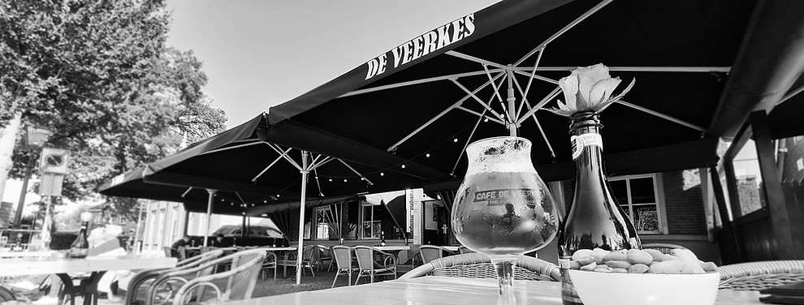

High Beer Borrel
25,00
- 4 proefglaasjes speciaalbier
- Borrelplank met kaasjes, worsten en luxe bittergarnituur

De Veerkes 013 513 24 05
Speciaalbiercafé aan het Sint Jansplein
Echte Brabantse gezelligheid in het centrum van Moergestel. Met ruim 100 speciaalbieren, waarvan een deel bijna wekelijks wisselt.
Midden in het centrum van Moergestel ligt Herberg De Veerkes. Een gezellig en sfeervol café dat nog echt de Brabantse gezelligheid uitstraalt.
Wil je rustig wat drinken en een klein hapje eten? Dan bieden het café en het terras volop mogelijkheden. Daarbij kun je genieten van één van de ruim 100 speciale bieren.

Naast onze reguliere biertjes hebben we zo'n 100 speciaalbieren. Dit is de vaste kaart; de wisselbieren staan op de wisselbierkaart.
Kijk voor de overige tapbieren op onze wisselbierkaart.
Kijk voor diverse andere IPA's op onze wisselbierkaart.
Een deel van de bieren wisselt bijna wekelijks. Vraag aan de bar naar de wisselbierkaart of scan in het café de QR-code van Untappd: daarop staan de bieren die we dit weekend schenken.
Proeven van speciaalbier met een plank vol hapjes erbij. Vanaf 2 personen, reserveer minimaal 1 dag van tevoren.
25,00
37,50
Een lekker hapje bij je biertje, of in het weekend aan het diner. Alle schotels zijn ook af te halen: bel even.
Koffie op het terras, een wijntje of een whiskey na het eten.
Wat er te doen is bij, of georganiseerd door of met, De Veerkes.
za12dec
Vraag aan de bar naar de details.
Er staan nu geen activiteiten in de agenda. Vraag aan de bar wat er binnenkort op het programma staat.

Bij De Veerkes maken we van ieder moment een feestje. Of het nu gaat om een borrel, verjaardag, boerenovertrek, bierproefmiddag of reünie: we hebben de ruimtes om er een feest van te maken. Kleine en grote groepen kunnen bij ons terecht.
In elke ruimte: een bar met tap, een muziekinstallatie en feestverlichting.
Bel of mail, geheel vrijblijvend, voor de vele mogelijkheden.
| Maandag | Gesloten |
|---|---|
| Dinsdag | Gesloten |
| Woensdag | 15.00 - 00.00 |
| Donderdag | 19.00 - 00.00 |
| Vrijdag | 14.00 - 02.00 |
| Zaterdag | 14.00 - 02.00 |
| Zondag | 13.00 - 23.00 |
Diner: vrijdag, zaterdag en zondag van 17.00 tot 20.30 uur. Tosti's tot 17.00 uur.
013 513 24 05deveerkes@home.nl
Reserveren of iets afhalen? Bel of mail ons.